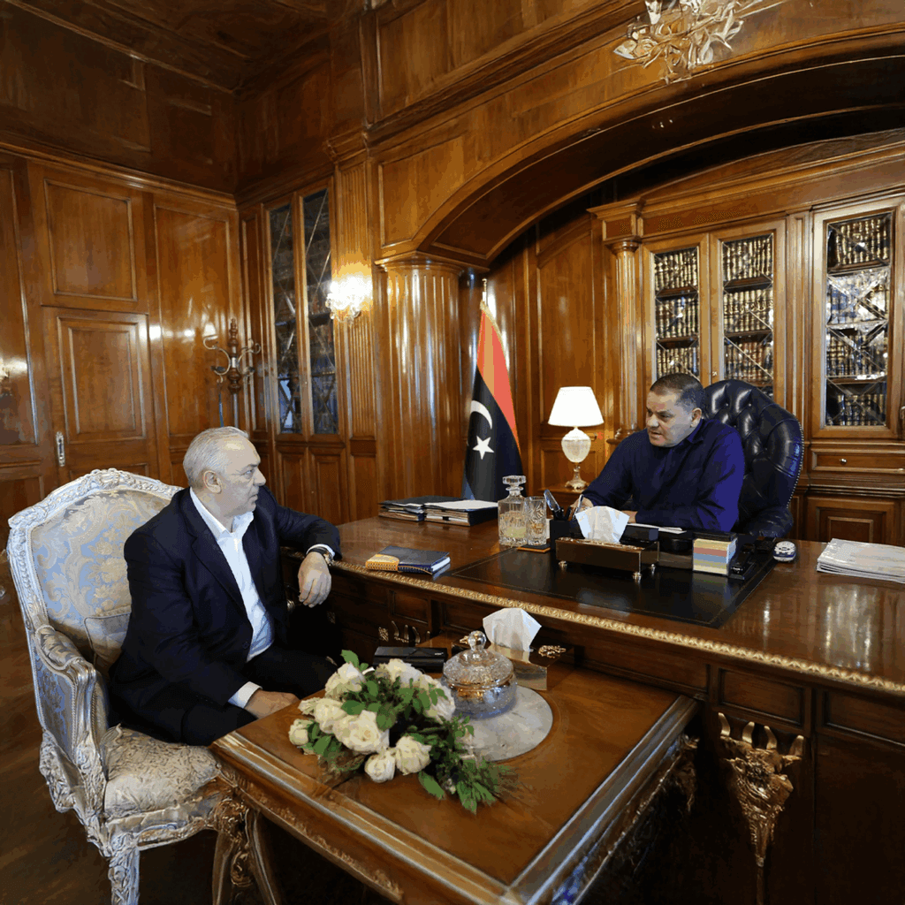

Construire un dialogue stratégique pour un progrès
partagé
Institutionnel 2026


Dans le cadre des efforts continus visant à renforcer les
investissements nationaux et à
favoriser une collaboration
stratégique, le Premier ministre du Gouvernement d’unité
nationale en Libye a reçu le président exécutif du groupe OLA
Energy.
La rencontre a mis en avant l’engagement continu du gouvernement à
dialoguer avec les
entreprises qui contribuent au développement
économique du pays, tout en offrant
l’occasion d’échanger des points
de vue sur les initiatives et les projets futurs d’OLA
Energy.
Ce dialogue témoigne du dévouement d’OLA Energy à bâtir des
partenariats durables
fondés sur le respect mutuel, l’innovation et
une croissance durable dans toute la région.